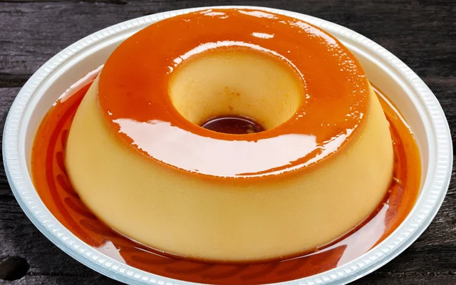

Pudin De Leite
⏱️ 50 Min
⭐ Difícil
Para Fazer A Calda
- 1 xícara de açúcar
- ½ xícara de água
- Derreta o açúcar até ficar âmbar claro, adicione a água (cuidado com o vapor) e mexa até dissolver.
Espalhe na forma.
Ingredientes para o Pudin
- 1 lata de leite condensado
- 2 medidas (da lata) de leite integral
- 3 ovos
Modo de Preparo/Montagem
- Bata tudo no liquidificador apenas para misturar.
- Passe a mistura por uma peneira fina 2 vezes para tirar as bolhas e a película do ovo. Deixe
descansar 15 minutos.
- Despeje na forma caramelizada. Cubra com papel alumínio (parte brilhante para dentro).
- Coloque a forma dentro de uma assadeira com água quente (banho-maria).
- Asse em forno baixo (160°C) por cerca de 1 hora e 30 minutos. O pudim deve estar firme, mas
balançando como uma gelatina no centro. Deixe esfriar e leve à geladeira por 6 horas antes de
desenformar.
Video Para melhor guia
Video de guia
A receita Não condis com os video(São apenas videos expermentais)